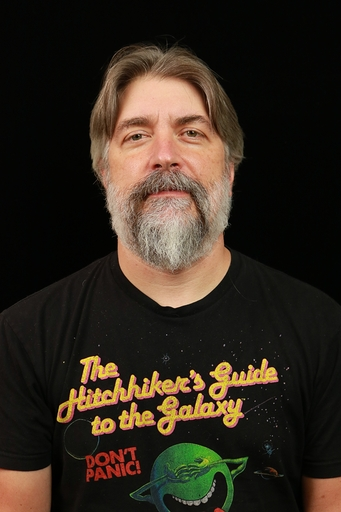

Jonas Mueller
Handshake
Director of AI Research
Leads a group advancing Data and Evaluations for frontier AI. Previously at Cleanlab,
where he pioneered methods to detect and remediate issues in enterprise AI agents.
Earlier, he was a Senior Scientist at AWS building AutoML and deep learning services.
He completed his PhD at MIT CSAIL and undergraduate studies at UC Berkeley.

Anish Athalye
Handshake
Director of AI Research
Leads research on RL environments and post-training. Previously co-founder and CTO at
Cleanlab (acquired by Handshake). He completed his PhD at MIT CSAIL in the PDOS
group, advised by Frans Kaashoek and Nickolai Zeldovich.

Priyaranjan Pattnayak
Oracle AI
Senior Principal Scientist
Senior Principal Scientist at Oracle Cloud, leading research initiatives in
Generative AI, NLP, and AI robustness for enterprise-scale multilingual and
multimodal systems. His work emphasizes production-grade agentic frameworks,
low-resource language modeling, evaluation, and trustworthy AI deployment.

Aziza Mirsaidova
Oracle AI
Applied Scientist
Works in GenAI evaluations across multimodal, text, and code generation. Also an
Ethics and Technology Practitioner 2026 Fellow at Stanford. Previously worked in AI
safety at Microsoft Responsible AI research.

Natasha Jaques
University of Washington, Google DeepMind
Assistant Professor and Staff Research Scientist
Focuses on social reinforcement learning in multi-agent and human-AI interactions.
During her PhD at MIT, she developed foundational RLHF techniques for language
models. Her work has received awards at NeurIPS and ICML and has been widely
featured in research and media venues.

Andi Peng
humans&
Co-Founder
Previously worked on RL and post-training at Anthropic across Claude 3.5 to 4.5, and
completed her PhD at MIT CSAIL advised by Jacob Andreas and Julie Shah. Her work
centers on agents that learn representations from rich human knowledge.

Rasool Fakoor
Boson AI
Member of Technical Staff
Leads reinforcement learning and modeling efforts for robust agentic systems across
changing tasks and environments. Previously a researcher and tech lead at AWS, and a
founding member of post-training efforts for Amazon’s early RLHF models.
Ahmed Elgohary
Microsoft Research
Senior Research Scientist
Ahmed is Senior Researcher at Microsoft Research AI Frontiers focusing on reasoning and agentic models.
Until very recently, he was part of the Microsoft Responsible AI team where he worked on the safety alignment and evaluation of LLMs and Agents.
Alina Gavrilov
Stanford University
Graduate Student
Alina is a graduate student in Computational and Mathematical Engineering at Stanford University, researching women's health modeling using wearables. Her previous experience is in structural civil engineering and project management in local government.
She is interested in designing AI systems for public good that are measurable, interpretable, and robust to uncertainty.
Aparna Elangovan
Collate
Head of AI
Holds a PhD in natural language processing from the University of Melbourne. Her
work focuses on evaluation and reliability of machine learning and large language
models, including human-centered and uncertainty-aware approaches.
Miguel Ballesteros
Oracle AI
AI Architect
Miguel is currently an AI Architect (Applied Scientist) at Oracle Cloud
Infrastructure (OCI). Previously, he worked as a Principal Applied Scientist at AWS,
and has also held positions at IBM, Carnegie Mellon University (CMU), and
Universitat Pompeu Fabra (UPF). He has taught undergraduate and graduate courses at
both CMU and UPF.

Graham Horwood
Oracle AI
Senior Director of Applied Science
Graham is Senior Director of Applied Science at Oracle’s OCI AI Science team,
leading applied science efforts at the intersection of large-scale ML systems and
enterprise cloud AI. Prior to Oracle, he served as Senior Director of Applied Science
at Amazon Web Services (AWS).